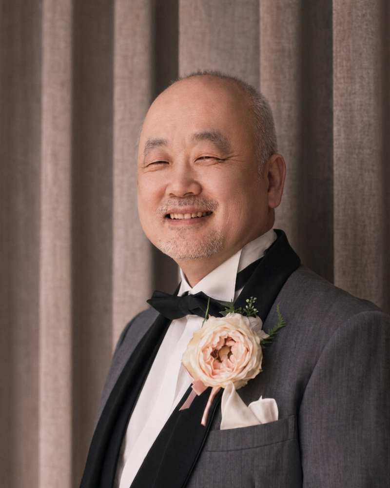

自分の読みを客観的に知る
発声・発音・速度・間・抑揚の癖を確認し、今の自分に必要な改善点を明確にします。
日本朗読検定協会｜Zoomマンツーマン
練習しているのに、なぜか伝わらない。その原因をあなたの声と読みから見つけ、「緩急・強弱・高低」を意図して使えるようになるZoomマンツーマン3回集中講座。
限定10名に達し次第、募集を終了します。
あなたの声と読みを個別に診断し、
「これから何を練習すればよいか」を明確にする
受講するか迷っている方は、案内メールへの返信でご相談いただけます。無理に受講をおすすめすることはありません。
Your Concerns
About Voice Bayer
ボイスバイエルは、声帯に無理をかけず、作品の意味や情景を声で届けるための発声と音声表現のトレーニングです。
この入門講座では、現在の発声、発音、読み方を個別に診断。「自分では表現しているつもり」と「聞き手に実際に届いている印象」の差を確かめたうえで、基礎トレーニング3種類をマンツーマンで実践します。
初心者のためだけの入門ではありません。朗読を続けてきた方が、自分の読みを客観的に見直し、聞き手に情景が届く表現の土台を組み直すための入門講座です。
What You Will Gain
発声・発音・速度・間・抑揚の癖を確認し、今の自分に必要な改善点を明確にします。
作品の意味に合わせて声を変化させ、聞き手の頭に場面が浮かぶ朗読を目指します。
緩急・強弱・高低を意図して使い、一本調子でも、やりすぎでもない表現を身につけます。
録音を聞いて課題を判断し、自宅でも再現・継続できる練習方法を身につけます。
Curriculum
現在の発声、発音、読み方を確認し、一人ひとりの課題と改善ポイントを明確にします。自分では気づきにくい声の癖、喉への負担、読み方の傾向から、今後のトレーニング方針を整理します。
声帯を保護しながら発声の土台を作る、3種類の基礎トレーニングを実践。姿勢、呼吸、声の出し方、注意点をマンツーマンで指導します。
緩急・強弱・高低の使い方を実践。さらに、改善したいことや練習したい作品などを扱う、フリーテーマの個別レッスンを行います。
あなたの声に合わせた、3回の個別レッスン
受講するか迷っている方は、案内メールへの返信でご相談いただけます。無理に受講をおすすめすることはありません。
ボイスバイエル入門講座に申し込む →限定10名に達し次第、募集を終了します。Support
各回のレッスン録画をご提供。理解しきれなかった部分や、自宅練習のポイントを何度でも見返せます。
録画は受講者本人の復習専用です。第三者への共有・転載・公開はできません。初回レッスン日から30日間、レッスンや自宅練習で分からないことをLINEで質問できます。原則、文章または短い音声メッセージで回答します。
返信にはお時間をいただく場合があります。即時返信を保証するものではありません。Recommended For
One to One
声の高さ、響き方、喉への力の入り方、発音の癖、読み方の傾向は、一人ひとり異なります。同じ助言が、すべての人に当てはまるわけではありません。
受講者の声と読みを実際に確認しながら、どの言葉が届いているか、どこが単調または過剰に聞こえるかを具体的に整理。その人に必要なトレーニングと改善方法を個別にお伝えします。
自分では気づきにくい癖も、マンツーマンだからこそ、落ち着いて確認できます。

講師写真Instructor
一般社団法人 日本朗読検定協会
朗読検定、朗読講師育成、音声表現指導などを通じて、朗読を学ぶ方、朗読を仕事にしたい方、朗読講師を目指す方の指導に携わっています。
発声や発音だけでなく、緩急、強弱、高低を活用した、聞き手に伝わる音声表現の指導を行っています。
Course Overview
Course Fee
Zoomマンツーマン 30分×全3回
FAQ
はい。現在の発声、発音、読み方を確認したうえで、一人ひとりに合わせて進めます。
大丈夫です。発声に自信がない方、自己流で練習してきた方にこそ、基礎から学んでいただきたい講座です。
パソコン、スマートフォン、タブレットで利用できます。接続方法に不安がある場合は、事前にご相談いただけます。
申し込み後、講師と相談のうえで全3回の日程を決めます。
原則として、初回から1か月程度を目安に全3回を受講します。ご事情に応じて相談可能です。
最終レッスン日から60日間ご視聴いただけます。
受講者本人の復習専用です。第三者への共有、転載、公開はできません。
レッスンで扱った発声、発音、基礎トレーニング、自宅練習に関する質問ができます。
レッスン内容に関する簡単な質問が対象です。長時間の音声添削や追加レッスン相当の内容は対象外です。
お申込み確定後のキャンセル、返金は承れません。
Take the Next Step
練習を重ねても、自分の読みを自分だけで客観的に判断するのは難しいものです。
今の声と読みの課題を知り、緩急・強弱・高低を意図して使えるようになることで、一本調子でも、やりすぎでもない、情景の届く朗読へ近づけます。
受講するか迷っている方は、案内メールへの返信でご相談いただけます。無理に受講をおすすめすることはありません。
ボイスバイエル入門講座に申し込む →限定人数に達し次第、募集を終了します。